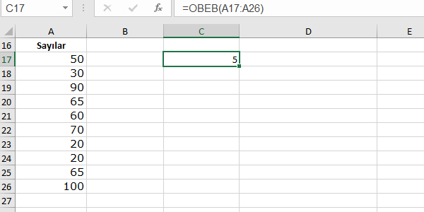

| $ Temel ve Yararlı Excel Fonksiyonları |
| Microsoft Office Excel'de kullanılan temel ve yararlı olan bazı fonksiyonlar bulunmaktadır.Bu fonksiyonların ne işe yaradığını ve kullanımını örnekler üzerinde göstereğim. |
A-)Metin Fonksiyonları |
|
1-)BÜYÜKHARF(metin):Tüm metni büyük harfle yazdırır. 2-)KÜÇÜKHARF(metin):Tüm metni küçük harfle yazdırır. 3-)YAZIM.DÜZENİ(metin):Metin içindeki her kelime'yi büyük harfle yazdırır. Kullanımları |
4-)KIRP(metin):Birden fazla tekrar eden boşlukları siler.Kullanımı |
5-)ÖZDEŞ(metin1;metin2): iki metni karşılaştırır.Eğer iki metin aynı ise doğru,değilse yanlış değerini döndürür.
Kullanımı |
6-)UZUNLUK(metin):bir metnin kaç karakterden oluştuğunu gösterir.
Kullanımı |
7-)BİRLEŞTİR(metin1;metin2):Verilen metinleri birleştirmek için kullanılır.& karakteri de aynı işlevi görmektedir.
Kullanımları |
8-)YERİNEKOY(metin;eskimetin;yenimetin):Bir metin içinde, bir karakter dizisini başka bir karakter dizisi ile değiştirir.
Kullanımı |
 |
|
9-)SOLDAN(metin;alınacak_karakter_sayısı):Soldan,belirtilen karakter sayısı kadar karakter alır.
10-)SAĞDAN(metin;alınacak_karakter_sayısı):Sağdan,belirtilen karakter sayısı kadar karakter alır. 11-)PARÇAAL(metin;başlangıç_sayısı;alınacak_karakter_sayısı);belirli bir konumdan,istenilen karakter sayısı kadar karakter alır. Kullanımı |
12-)BUL(bul_metin;metin_içinde):Bir metin içinde aranan metin ya da karakter dizisinin konumunu verir.
Kullanımı |
B-)Mantıksal Fonksiyonlar |
1-)EĞER(koşul;[koşul sağlandığında yapılacak işlem];[koşul sağlanmadığında yapılacak işlem]):Belirli bir koşula göre yapılacak olan işlemleri belirler.
Kullanımı |
2-)EĞERORTALAMA(aralık;koşul;ortalaması_alınacak_aralık):Bir ölçüde göre belirtilen hücrelerin ortalamasını bulur.
Kullanımı |
3-)EĞERSAY(aralık;koşul):Belirli aralıkta,istenilen koşula uyan hücrelerin sayısını verir.
Kullanımı |
|
4-)ETOPLA:belirli bir koşul'a göre belirtilen aralığın toplamını alır.2 farklı kullanımı vardır. Etopla(aralık;koşul):koşul sağlanan hücrelerin toplamını alır Etopla(aralık;koşul;toplamı_alınacak_aralık):Koşul sağlanan hücrelere karşılık gelen diğer aralıktaki hücrelerin toplamını alır. Kullanımları |
C-)Matematiksel Fonksiyonlar |
1-)TOPLA(aralık):Belirli aralıktaki sayıların toplamını verir.
Kullanımı |
2-)ORTALAMA(aralık):Belirtilen aralıktaki sayıların ortalamasını alır.
Kullanımı |
3-)MİN(aralık):Belirtilen aralıktaki en küçük sayıyı bulur.
Kullanımı |
4-)MAK(aralık):Belirtilen aralıktaki en büyük sayıyı bulur.
Kullanımı |
5-)MUTLAK(sayı):bir sayının mutlak değerini alır.
Kullanımı |
6-)MOD(sayı;bölen):Bir sayının başka bir sayıya bölümünden kalanı verir.
Kullanımı |
7-)OBEB(aralık):Belirtilen aralıktaki sayıların ortak bölenini bulur.
Kullanımı |
|  |
8-)OKEK(aralık):Belirtilen aralıktaki sayıların en küçük ortak katını bulur.
Kullanımı |
9-)ÇİFTMİ(sayı):Bir sayının çift olup olmadığını kontrol eder.Çift ise doğru,tek ise yanlış değerini verir.
Kullanımı |
10-)SATIRSAY(aralık):Belirtilen aralığın kaç satırdan oluştuğunu gösterir.
Kullanımı |
11-)KAREKÖK(sayı):Bir sayının karekökünü alır.
Kullanımı |
12-)DELTA(sayı1;sayı2):İki sayının eşit olup olmadığını kontrol eder.İkisi eşitse 1,eşit değilse 0 sonucunu verir.
Kullanımı |
13-)İŞARET(sayı):Sayının işaretini belirler. Sayı 0 ise 0,pozitif ise 1,negatif olduğunda ise -1 sonucunu verir.
Kullanımı |
|
14-)BAĞ_DEĞ_DOLU_SAY(aralık):Belirtilen aralıktaki dolu hücreleri sayar. 15-)BOŞLUKSAY(aralık):Belirtilen aralıktaki boş hücreleri sayar. Kullanımları |
 |
16-)ÇARPIM(aralık):Verilen aralıktaki tüm sayıları çarpar.
Kullanımı |
17-)RASTGELEARADA(alt;üst):Belirlediğimiz aralıkta rastgele sayı döndürür.
Kullanımı |
D-)Yuvarlama Fonksiyonları |
|
1-)YUVARLA(sayı;[virgülden_sonra_istenen_basamak_sayısı]): Belirtilen sayıyı, virgülden sonra istenen basamak sayısına göre yuvarlar. 2-)ÇİFT(sayı):Bir sayıyı, kendisine en yakın büyük çift sayıya yuvarlar. 3-)TEK(sayı):Bir sayıyı, kendisine en yakın büyük tek sayıya yuvarlar. 4-)Aşağıyuvarla(sayı;[virgülden_sonra_istenen_basamak_sayısı]): Sayıyı belirtilen basamak sayısına göre aşağıya yuvarlar. 5-)Yukarıyuvarla(sayı;[virgülden_sonra_istenen_basamak_sayısı]): Sayıyı belirtilen basamak sayısına göre yukarıya yuvarlar. Kullanımları |
 |